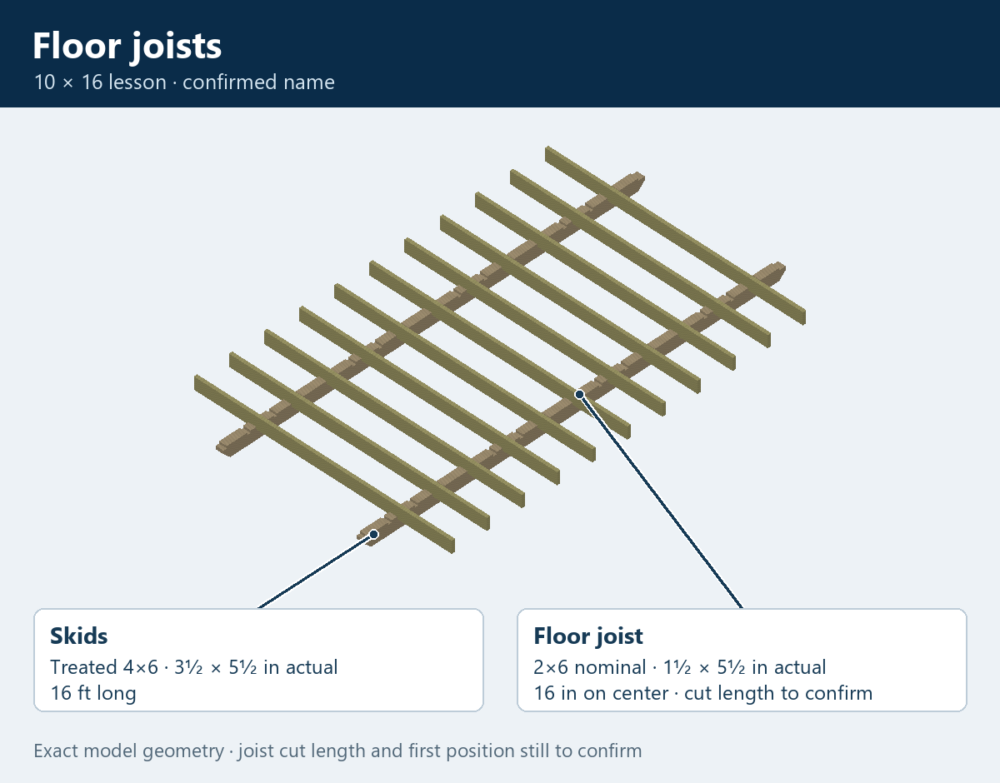
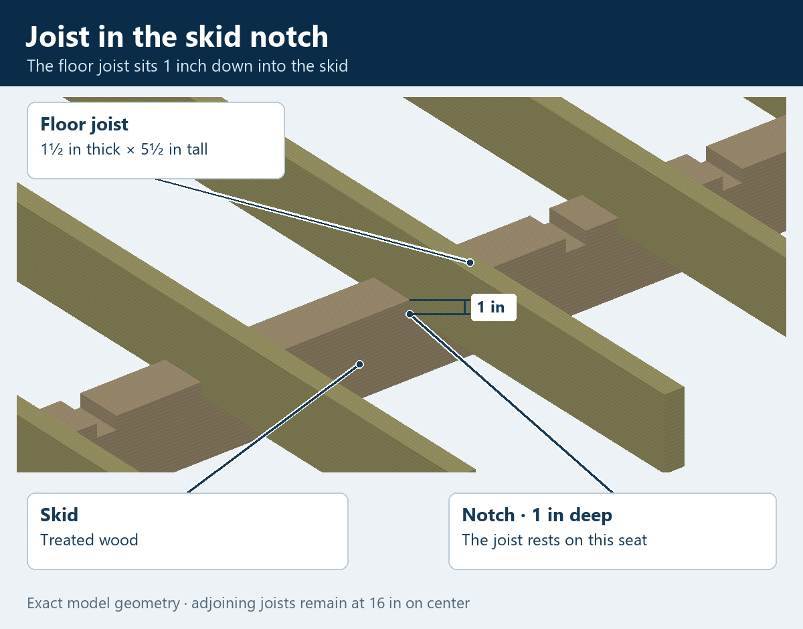
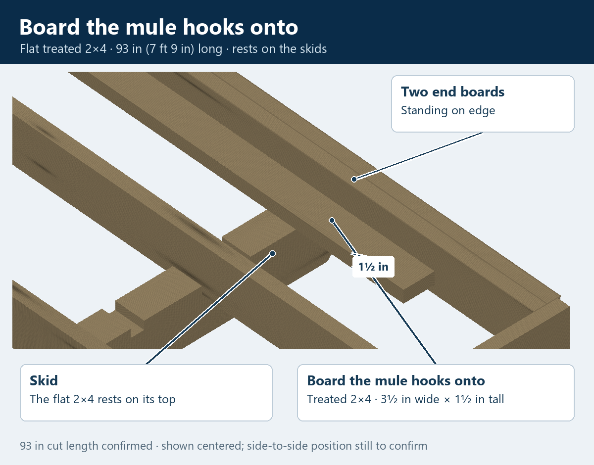

10 × 16 · Floor first
Floor joists and outer boards
The floor is 10 feet wide outside to outside. A 1½-inch outer board on each side leaves 9 feet 9 inches for the floor joists: 120 − 1½ − 1½ = 117 inches. One end has two boards together; the other has one.
These floor-framing boards are treated wood, with varied grain and knot patterns on each piece. The crosswise 2×6s sit 1 inch down in the skid notches.
The board the mule hooks onto is a treated 2×4 cut to 93 inches (7 feet 9 inches). It lies flat just inside the two end boards, resting on top of the skids, and is where the mule attaches to drag the barn.

How the joist fits in the notch

Board the mule hooks onto

The joist length follows your width calculation. The 93-inch board is shown centered for now; its side-to-side position, the first joist position, number of skids and front/back assignment of the ends still need to be confirmed together.